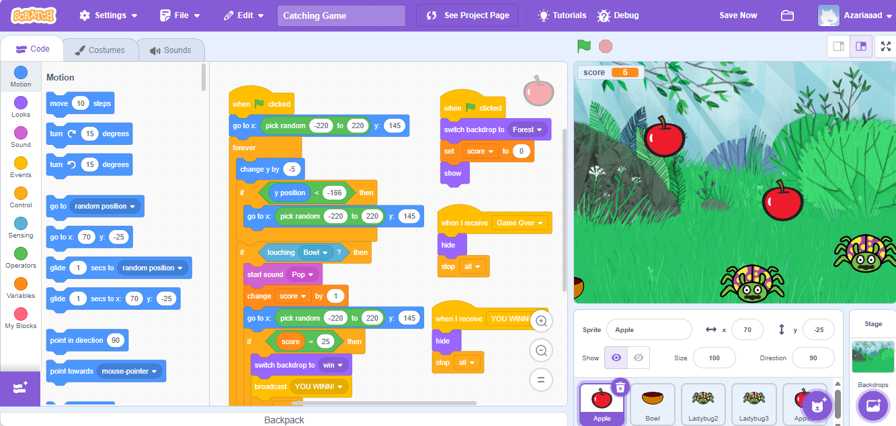

← Back to Projects
Catching Game Scratch
A simple Scratch-based game built around catching objects to score points.

Project Overview
A simple Scratch-based game built around catching objects to gain points. This project was created to practice fundamental programming logic, including controls, conditions, and interactions.
Roles & Responsibilities
- Developed the project independently from scratch.
- Built the core game logic and scoring system.
- Designed the visual presentation and sprites.
- Configured player controls and object interactions.
Technologies & Deliverables
- Tech Stack: Scratch
- Result: A simple interactive game featuring dynamic gameplay and a scoring system.